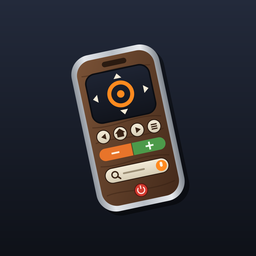
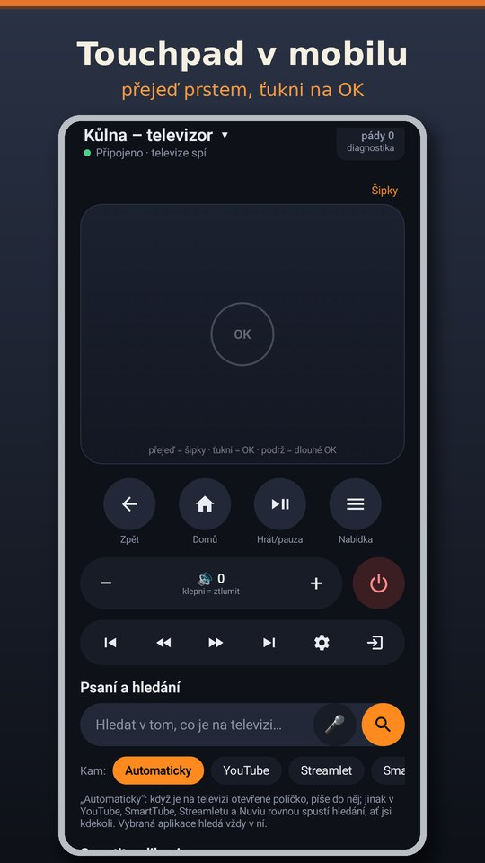
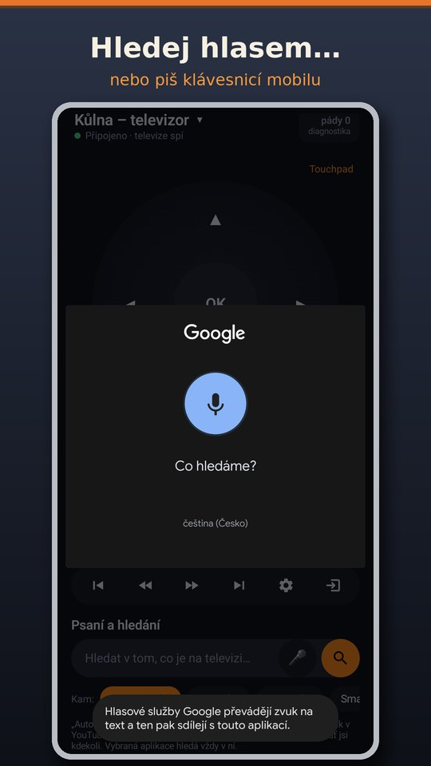
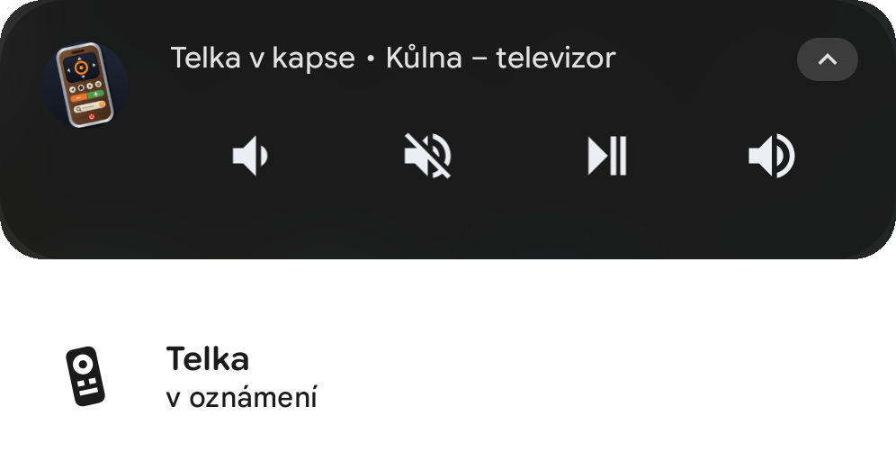

Telka v kapse
Ovladač televize v mobilu pro Google TV a Android TV
Zařídí mnohem víc než originální ovladač od televize.
Touchpad nebo šipkyPřejedeš prstem a výběr na televizi se posune. Ťuknutí funguje jako tlačítko OK.
Mluv k televiziŤukneš a řekneš, co chceš. Google Asistent v televizi to vyhledá nebo udělá – stejně jako s mikrofonem originálního ovladače. Naplno v angličtině, česky zatím jen jednoduché hledání.
Psaní z mobiluDo jakéhokoli políčka na televizi píšeš klávesnicí mobilu nebo diktuješ. Žádné šipkování po písmenkách.
Hledání odkudkoliNapíšeš název a Telka ho vyhledá rovnou v YouTube, SmartTube nebo Stremiu – ať je televize zrovna na jakékoli obrazovce.
Spouštění aplikacíYouTube, Netflix, Stremio, SmartTube a další otevřeš na televizi jedním ťuknutím v mobilu.
HlasitostOvládáš ji tlačítky v aplikaci nebo bočními tlačítky telefonu. Aplikace ukazuje, jak nahlas televize právě hraje.
Ovladač v oznámeníHlasitost, ztlumení a pauza přímo z lišty oznámení – i na zamčené obrazovce, bez otevírání aplikace. Zapneš ho dlaždicí „Telka“ v rychlém nastavení.
Zapnutí z mobiluTelka televizi zapne, i když hluboce spí (přes Google Cast nebo Wake-on-LAN).
Spolehlivé spojeníKdyž domácí síť zakolísá, Telka se během chvilky sama připojí znovu a žádné stisknutí se neztratí.
Bez reklam a účtůŽádné sledování. Telka mluví jen s tvou televizí v domácí síti.
Netflix, Disney+, HBO Max a spol. – aplikace největších streamovacích gigantů si hlídají
vlastní pravidla, takže v nich ovládání pojede lehce omezeně. Spustíš je, šipky, touchpad, přehrávání i hlasitost
fungují normálně. Mají ale vlastní klávesnici na obrazovce, kam psaní z mobilu nedosáhne, a hledání z Telky do nich
neskočí. Hledat v nich proto nejlíp hlasem – Ťukni a mluv a Asistent v televizi to najde.



Ovladač v oznámení
Hlasitost, ztlumení a pauza rovnou z lišty oznámení – i na zamčené obrazovce, bez otevírání aplikace. Zapneš ho dlaždicí Telka v rychlém nastavení (nebo v aplikaci v menu televize).

Google Asistent a čeština – Telka předá tvůj hlas Asistentovi v televizi a ten pak
rozhoduje, co umí. Česky zvládne jen jednoduché hledání (název filmu, videa, herce); příkazy jako spuštění
aplikace nebo ovládání televize nefungují – stejně jako s originálním ovladačem. Anglicky umí všechno:
„Open Netflix“, „Play Matrix on YouTube“, „Volume up“, „What's the weather?“. Stačí přepnout jazyk televize
v Nastavení → Systém → Jazyk na English.
Co potřebuješ
- Televizi nebo krabičku s Google TV nebo Android TV – TCL, Sony, Philips, Hisense, Xiaomi, Chromecast s Google TV a další
- V televizi službu Android TV Remote Service ve verzi 5 nebo novější – verzi najdeš v televizi v Nastavení → Aplikace, aktualizace jde přes Obchod Play (nové televize ji mají vždy)
- Mobil s Androidem 8 nebo novějším
- Mobil a televizi ve stejné domácí síti (jedno klidně na Wi-Fi, druhé na kabelu)
- Pro mluvení k televizi zapnutého Google Asistenta (ne režim „pouze aplikace“)
Televize Samsung (Tizen) a LG (webOS) zatím podporované nejsou.